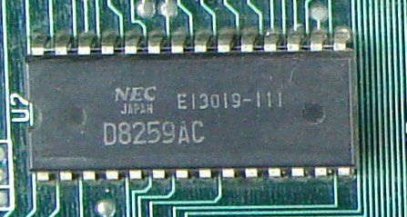
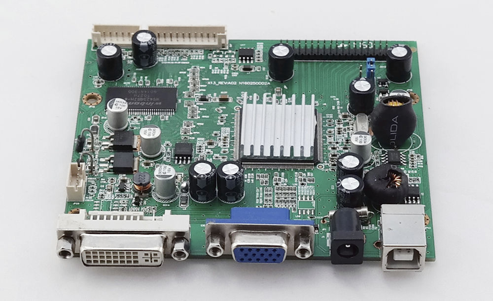

3.1 Chipset
Definición: Es un conjunto de circuitos integrados en la placa base que permite la comunicación entre la CPU, memoria, y dispositivos periféricos.
Funciones principales:
- Controlar el flujo de datos entre el procesador y los componentes internos y externos.
- Gestionar las conexiones de entrada/salida (puertos USB, SATA, etc.).
Tipos:
- Northbridge: Maneja la comunicación con componentes de alto rendimiento, como la RAM y la tarjeta gráfica.
- Southbridge: Gestiona dispositivos de menor velocidad, como almacenamiento y puertos periféricos.
3.1.1 Unidad Central de Procesamiento (CPU)
Rol en el ensamble: El cerebro del equipo que ejecuta todas las operaciones aritméticas y lógicas.
Factores a considerar al seleccionar una CPU:
- Frecuencia: Velocidad del reloj, medida en GHz.
- Número de núcleos: Para multitarea eficiente (dual-core, quad-core, etc.).
- Compatibilidad con la placa base: Requiere verificar el zócalo (socket).
- Tipo de tareas: Gaming, diseño gráfico o uso cotidiano.
3.1.2 Controlador del Bus
Definición: Coordina la transferencia de datos entre la CPU, memoria y dispositivos periféricos.
Tipos de buses: Bus de datos, de direcciones y de control.
Importancia: Asegura la sincronización adecuada entre los componentes para evitar conflictos de datos.
3.1.3 Puertas de Entrada/Salida (E/S)
Definición: Conexiones que permiten la interacción del sistema con el mundo exterior (teclados, ratones, discos duros).
Tipos:
- Puertos USB, HDMI, Ethernet, etc.
Criterios de selección: Velocidad de transferencia y compatibilidad con los dispositivos utilizados.
3.1.4 Controlador de Interrupciones
Definición: Módulo encargado de manejar las interrupciones generadas por dispositivos o software.
Función: Prioriza las solicitudes y las envía a la CPU para que sean atendidas.
Tipos: Por hardware (teclado) o software (errores de programa).

3.1.5 Controlador de Acceso Directo a Memoria (DMA)
Definición: Permite que los dispositivos periféricos accedan directamente a la memoria principal sin involucrar a la CPU.
Ventajas:Mejora la velocidad y reduce la carga del procesador.
Ejemplo:Transferencia de datos entre un disco duro y la RAM.

3.1.6 Circuitos de Temporización
Definición: Circuitos electrónicos que sincronizan las operaciones del sistema.
Funcion: enerar señales de reloj que regulan la ejecución de instrucciones en la CPU.
Importancia:Aseguran que los datos lleguen a tiempo a cada componente.
3.1.7 Circuitos de Control
Definición:Circuitos encargados de dirigir las señales de control a los componentes del sistema.
Función:Coordinar tareas específicas como lectura/escritura en memoria o habilitación de buses.
3.1.8 Controlador de Video
Definición:Hardware especializado para procesar imágenes y enviarlas al monitor.
Tipos: ntegrados en la CPU o dedicados (tarjetas gráficas como NVIDIA, AMD).

3.2.1 Entrada/Salida
Interacción entre dispositivos y el sistema.
Ejemplo: teclados, monitores y redes.
3.2.3 Almacenamiento
Selección entre discos HDD (económicos, mayor capacidad) o SSD (mayor velocidad).
3.3.1 Negocios
Uso en oficinas para tareas administrativas, correo electrónico y sistemas de gestión.
Ejemplo: Computadoras de escritorio económicas con procesadores básicos (Intel i3).
3.3.2 Industrial
Equipos diseñados para soportar condiciones extremas.
3.3.3 Comercio Electrónico
Computadoras usadas para gestionar plataformas en línea y bases de datos.